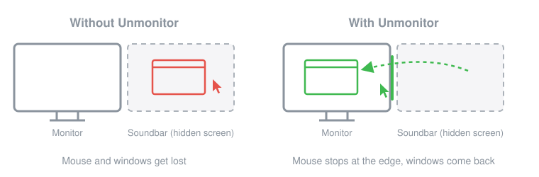
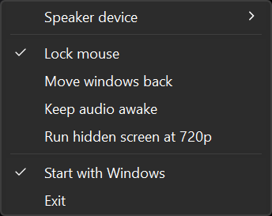

Unmonitor
Use HDMI audio from an AV receiver or soundbar on Windows without the extra monitor getting in the way.
Free for personal use. Windows 10 and 11. No installer, 250 KB.
The problem
When a receiver or soundbar is connected to a PC over HDMI, Windows treats it as a second display. Turning that display off also turns off the audio. Leaving it on in Extend mode means the mouse and windows keep disappearing onto a screen you can't see. This is sometimes called the phantom or ghost monitor problem.
Unmonitor leaves the display enabled, so audio keeps working, and makes Windows behave as if it weren't there.

What it does
Lock mouse
The cursor stops at the edge of your real monitors.
Move windows back
Windows that open on the speaker's screen come back to the monitor you are using.
Keep audio awake
Stops the receiver from dropping the HDMI audio link, which cuts off the start of sounds.
720p hidden screen
Lowers the speaker's screen so the GPU isn't drawing an invisible 4K desktop.
How to use it
- Download
unmonitor.exeand run it. - Right-click the tray icon (it may be hidden under the
^arrow) and choose your receiver or soundbar under Speaker device.

The exe isn't code-signed, so SmartScreen may warn about it: click More info, then Run anyway. See the VirusTotal result.
Questions
Why does my AV receiver or soundbar show up as a monitor?
HDMI carries audio inside the video signal. The receiver tells the PC it is a display, so Windows adds it as one, and it has to stay active for audio to reach the receiver.
Can't I just disable the extra display?
Disabling it in Windows or the GPU control panel turns off that HDMI output, and the audio goes with it.
Why not use Duplicate mode?
On some setups Duplicate mode loses the audio. It also forces both screens to share one resolution and refresh rate, and some games pick the receiver as the main screen.
Will it work with my receiver or soundbar?
It should work with any HDMI audio device that Windows lists as a display. It has been tested with an LG soundbar and an NVIDIA GPU on Windows 11.
Does it stop my PC from going to sleep?
No. Keep audio awake lets go of the audio device after a minute without keyboard or mouse input, so Windows can sleep as usual.
Privacy
Unmonitor doesn't collect, store or send any data. It never connects to the internet. Its only file is its settings file in %APPDATA%\Unmonitor.